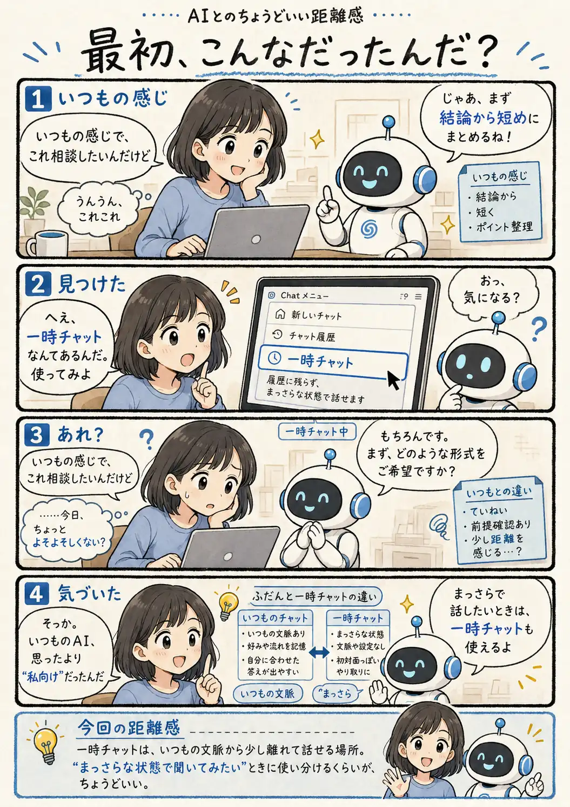

#121
最初、こんなだったんだ？
一時チャットにしたら、急に初対面みたいになりました。

メモ
一時チャットは、デフォルトではメモリやカスタム指示などを使わない非パーソナライズの状態で始まります。いつもの会話と比べてみると、自分が普段どれだけ説明を省略していたかに気づくかもしれません。
なお、2026年8月のアップデートで、一時チャットでも開始時にパーソナライズを選べるようになり、途中で「これは残しておきたい」と思った会話は通常のチャット履歴へ保存することもできるようになりました。
今回の距離感
一時チャットは、いつもの文脈から少し離れて話せる場所。「まっさらな状態で聞いてみたい」ときに使い分けるくらいが、ちょうどいい。